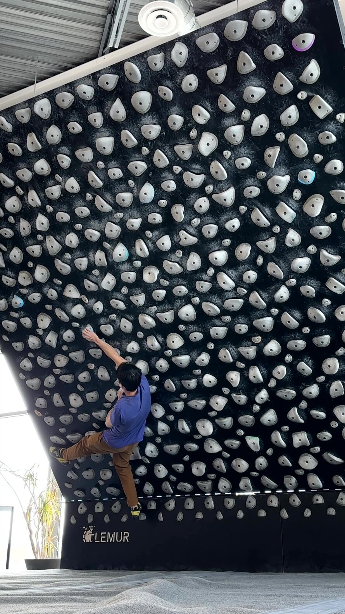
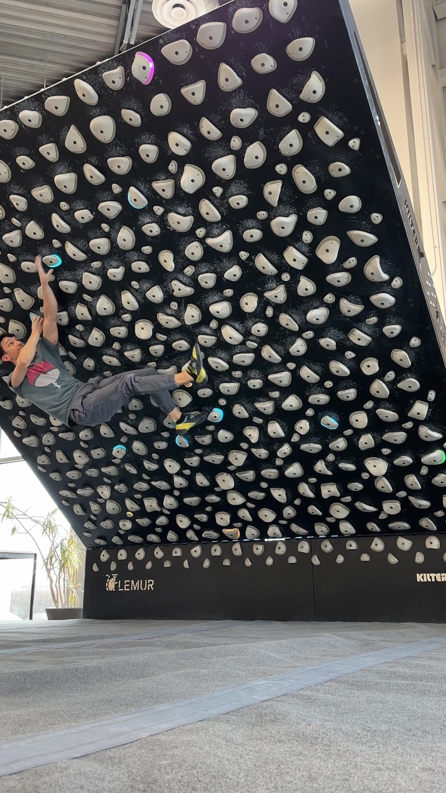

CROSS / ROSE
Reaching across your body to a hold on the opposite side, often crossing arms or twisting the torso.
Static Cross on "Real G's"
Cross | Static
Static Cross on "Real G's"
Cross | Static

A static cross move on "Real G's move in silence" V9 / 7c @ 40.
Deadpoint Cross on "Flow10"
Cross | Deadpoint
Deadpoint Cross on "Flow10"
Cross | Deadpoint

A deadpoint cross move on "Flow10" V11 / 8a @ 60.
Dynamic Cross on "Mommy's Genes"
Cross | Dynamic
Dynamic Cross on "Mommy's Genes"
Cross | Dynamic

A dynamic cross move on "Mommy's Genes" V10 / 7c+ @ 60.
Static Rose on "8 gigabites"
Static
Static Rose on "8 gigabites"
Static

A static rose move on "8 gigabites of ddr3 ram" V9 / 7c @ 50.
Technique Notes
Both static and dynamic cross moves are heavily dependent on body tension.
Static cross moves require you to keep tension through the foot and maintain it throughout the move.
Dynamic crosses require anti-rotation strength, and like all dynamic moves, benefit from optimizing the starting body position to minimize swing. The closer your starting body position is to the ending position, the less swing there will be to hold.
Dynamic crosses often require you to bear down on the lower handhold, especially on steeper terrain. Squeezing and staying engaged on the lower hold throughout the movement also cuts down on the swing and keeps you from flying off the wall. I think of the lower hold as keeping me "pinned" in place while the other hand moves and my body swings.